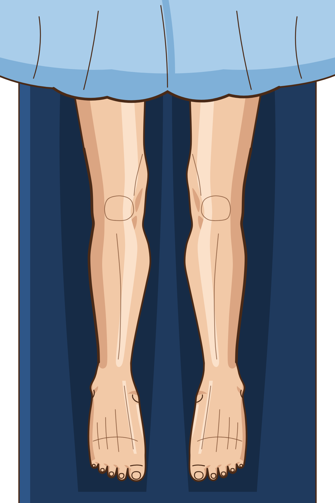

TOPIC 01
Peripheral Vascular Disease
Lower-limb arterial exam (acute & chronic ischaemia) · peripheral pulses · varicose veins · leg swelling (DVT)
ملخص سريع
فحص الطرف السفلي لمريض الأوعية: ابحث عن علامات نقص التروية الحاد (الـ 6 Ps) والمزمن (تغيّرات الجلد، القُرَح، ضعف النبض)، ثم افحص الدوالي (اختبار العاصبة/ترندلنبرغ) وتورّم الساق (الجلطة الوريدية العميقة ومقياس Wells). القاعدة الذهبية: قارن دائماً بين الطرفين.
1Number of things to look for
Inspection — 10 things
- Colour: pallor, cyanosis, dependent rubor
- Hair loss, thin shiny skin
- Thickened / dystrophic toe-nails
- Ulcers – tips of toes, between toes, heels, pressure points
- Gangrene (dry / wet) or previous amputations
- Muscle wasting (thigh, calf)
- Scars – bypass grafts, vein harvest, fasciotomy
- Swelling / oedema
- Venous changes – varicosities, haemosiderin, eczema, lipodermatosclerosis
- Lift the heels & part the toes – hidden ulcers
Palpation — 7 things
- Temperature (back of hand, compare sides)
- Capillary refill time (< 2 s)
- Femoral pulse (+ radio-femoral delay)
- Popliteal pulse
- Posterior tibial pulse
- Dorsalis pedis pulse
- Abdominal aorta (AAA – expansile?)
Acute ischaemia – the 6 Ps — 6 things
- Pain
- Pallor
- Pulselessness
- Paraesthesia
- Paralysis
- Perishingly cold (poikilothermia)
Special tests — 5 things
- Auscultate for bruits (femoral, aorta)
- Buerger’s angle
- Buerger’s test (sunset foot)
- ABPI with hand-held Doppler
- Sensation & power
Varicose veins — 6 things
- Inspect STANDING – distribution GSV / SSV
- Skin changes in the gaiter area
- Cough impulse at the saphenofemoral junction (SFJ)
- Tap test
- Tourniquet / Trendelenburg test
- Doppler / duplex of the junctions
Leg swelling / DVT — 7 things
- Unilateral vs bilateral
- Pitting oedema (press 10 s over the tibia)
- Calf circumference 10 cm below tibial tuberosity (≥ 3 cm difference)
- Tenderness along the deep veins
- Dilated superficial (collateral) veins
- Warmth / redness
- Wells score
2Step-by-step procedure
A. Arterial examination of the lower limb
- WIPER — Wash hands · Introduce yourself, confirm patient name & DOB · Permission: explain the examination and get consent (offer a chaperone) · Expose both legs from the groin to the toes (underwear on, groin covered with a sheet) · Reposition supine, head on one pillow. Ask: “Any pain anywhere?”
- General inspection from the end of the bed: comfort, pain at rest (legs hanging over the bed edge), nicotine-stained fingers, walking aids, oxygen, amputations, around the bed (GTN spray, cigarettes).
- Close inspection of both legs: colour, trophic changes, ulcers, gangrene, scars, wasting. Lift the heels and separate the toes.
- Temperature – back of your hand, moving distal → proximal, comparing both legs at the same level.
- Capillary refill – press the pulp of the big toe for 5 s; normal refill < 2 s.
- Pulses (always both sides): femoral at the mid-inguinal point; popliteal – knee flexed ~30°, both thumbs on the tibial tuberosity, fingertips of both hands pressing into the popliteal fossa; posterior tibial – behind the medial malleolus (one-third of the way to the Achilles tendon); dorsalis pedis – lateral to the extensor hallucis longus tendon over the 1st intermetatarsal space.
- Palpate the abdominal aorta (expansile mass = AAA) and check radio-femoral delay.
- Auscultate for bruits over the femoral arteries (and aorta / iliacs).
- Buerger’s test: raise both legs slowly; note the angle at which the foot turns pale (Buerger’s angle < 20° = severe ischaemia). Then sit the patient up with legs hanging: reactive hyperaemia (sunset foot) confirms ischaemia.
- Neurology: light-touch sensation and active movement of toes (paraesthesia / paralysis = threatened limb).
- State: “I would measure the ABPI with a hand-held Doppler.”
- Thank the patient, cover them up and help them dress · wash hands.
- Summarise your positive and important negative findings to the examiner.
- Differential diagnosis — chronic limb ischaemia (intermittent claudication / critical limb ischaemia) vs acute limb ischaemia (embolus / thrombosis).
- To complete the examination I would… examine the cardiovascular system, the abdomen (AAA) and do a neurological exam of the lower limbs; measure ABPI.
- Investigations — bedside: ABPI, ECG, BM/HbA1c; bloods: FBC, U&E, lipids, clotting; imaging: arterial duplex, CT angiography / MR angiography.
B. Varicose veins
- WIPER — Wash hands · Introduce yourself, confirm patient name & DOB · Permission: explain the examination and get consent (offer a chaperone) · Expose both legs from the groin to the toes · Reposition standing on a step. Ask: “Any pain anywhere?”
- Inspect standing from front and back: distribution – GSV (medial leg & thigh) vs SSV (posterior calf); saphena varix in the groin; skin changes in the gaiter area (haemosiderin, venous eczema, lipodermatosclerosis, atrophie blanche, venous ulcer above the medial malleolus).
- Palpate: warmth/tenderness (thrombophlebitis), pitting oedema, cough impulse at the SFJ (2–3 cm below and lateral to the pubic tubercle).
- Tap test: tap the upper end of the varicosity and feel the impulse distally – transmitted = incompetent valves.
- Tourniquet test: patient lying, raise the leg to empty the veins, apply a tourniquet just below the SFJ, then stand the patient. Veins stay empty → SFJ incompetence controlled; veins fill → incompetent perforator below the tourniquet. Repeat lower down (mid-thigh, below knee).
- Trendelenburg test: same as above using your fingers pressing on the SFJ instead of a tourniquet.
- State: “I would use a hand-held Doppler at the SFJ and SPJ.”
- Thank the patient, cover them up and help them dress · wash hands.
- Summarise your positive and important negative findings to the examiner.
- Differential diagnosis — primary varicose veins (GSV/SSV incompetence) vs secondary (post-DVT, pelvic mass, AV fistula).
- To complete the examination I would… perform a full arterial exam (before compression stockings), abdominal and pelvic exam (masses causing venous obstruction).
- Investigations — venous duplex ultrasound (gold standard), ABPI before compression therapy.
C. Lower-limb swelling / suspected DVT
- WIPER — Wash hands · Introduce yourself, confirm patient name & DOB · Permission: explain the examination and get consent (offer a chaperone) · Expose both legs from the groin to the toes · Reposition supine. Ask: “Any pain anywhere?”
- Inspect: unilateral or bilateral swelling, erythema, dilated superficial veins, skin changes, scars, plaster cast marks.
- Temperature and tenderness along the course of the deep veins (calf, popliteal fossa, femoral vein).
- Pitting oedema: press firmly with your thumb over the lower tibia for 10 s – note the level up to which pitting extends.
- Measure calf circumference 10 cm below the tibial tuberosity on both legs (≥ 3 cm difference is significant).
- Calculate the Wells score (see table).
- Thank the patient, cover them up and help them dress · wash hands.
- Summarise your positive and important negative findings to the examiner.
- Differential diagnosis — DVT, cellulitis, ruptured Baker’s cyst, haematoma, lymphoedema; bilateral = heart / liver / kidney failure, hypoalbuminaemia, drugs (amlodipine).
- To complete the examination I would… examine the abdomen and pelvis (mass compressing veins), the chest (PE), cardiovascular system (heart failure) and check for cancer.
- Investigations — Wells ≥ 2: proximal leg vein duplex ultrasound (within 4 h); Wells ≤ 1: D-dimer, if positive → duplex. Also FBC, U&E, LFT, clotting before anticoagulation.
3Step illustrations
Illustration pendingpvd_temperaturedrawn after the style of the first 3 images is approved
Illustration pendingpvd_cap_refilldrawn after the style of the first 3 images is approved
Illustration pendingpvd_femoral_pulsedrawn after the style of the first 3 images is approved
Illustration pendingpvd_pt_pulsedrawn after the style of the first 3 images is approved

Illustration pendingpvd_buergerdrawn after the style of the first 3 images is approved
Illustration pendingpvd_tourniquetdrawn after the style of the first 3 images is approved
Illustration pendingpvd_pittingdrawn after the style of the first 3 images is approved
Illustration pendingpvd_calf_measuredrawn after the style of the first 3 images is approved
4Inspection map

12345678910| # | Where to look | What you may find |
|---|---|---|
| 1 | Groin (lift the gown edge) | Femoral pulse, bypass scars, saphena varix, lymph nodes |
| 2 | Medial knee & thigh (GSV course) | Varicose veins, vein-harvest scar |
| 3 | Medial knee (other leg) | Bypass / harvest scars – compare sides |
| 4 | Shins | Pallor, hair loss, thin shiny skin, pitting oedema |
| 5 | Calves | Muscle wasting (chronic) / swelling, redness (DVT) |
| 6 | Gaiter area, above medial malleolus | Venous ulcer, haemosiderin, eczema, lipodermatosclerosis |
| 7 | Ankles | Oedema – level of pitting |
| 8 | Toes & between toes | Arterial ulcers, gangrene, fungal infection |
| 9 | Toe-nails | Thick dystrophic nails (chronic ischaemia) |
| 10 | Heels (lift them up!) | Pressure ulcers – commonly missed |
5Key tables
ABPI (ankle-brachial pressure index) = ankle systolic ÷ brachial systolic
| ABPI | Interpretation | Typical clinical picture |
|---|---|---|
| > 1.3 | Non-compressible, calcified arteries – unreliable | Diabetes, chronic kidney disease (use toe pressures) |
| 1.0 – 1.3 | Normal | — |
| 0.9 – 0.99 | Borderline | Usually asymptomatic |
| 0.5 – 0.9 | Mild–moderate PAD | Intermittent claudication |
| < 0.5 | Severe PAD / critical limb ischaemia | Rest pain, ulceration, gangrene |
Wells score for DVT
| Clinical feature | Points |
|---|---|
| Active cancer (treatment within 6 months or palliative) | +1 |
| Paralysis, paresis or recent plaster immobilisation of the leg | +1 |
| Recently bedridden ≥ 3 days or major surgery within 12 weeks | +1 |
| Localised tenderness along the deep venous system | +1 |
| Entire leg swollen | +1 |
| Calf swelling ≥ 3 cm compared with the other leg (10 cm below tibial tuberosity) | +1 |
| Pitting oedema confined to the symptomatic leg | +1 |
| Collateral superficial veins (non-varicose) | +1 |
| Previously documented DVT | +1 |
| An alternative diagnosis at least as likely as DVT | −2 |
| Score ≥ 2 = DVT likely · Score ≤ 1 = DVT unlikely |
Acute vs chronic limb ischaemia
| Acute | Chronic | |
|---|---|---|
| Onset | Sudden (hours) | Gradual (months – years) |
| Cause | Embolus (AF, MI) or thrombosis on plaque | Atherosclerosis |
| Symptoms | 6 Ps | Claudication → rest pain (worse at night, relieved by hanging the leg) |
| Skin | White / mottled, cold | Hairless, shiny, dystrophic nails, ulcers, gangrene |
| Collaterals | None – limb threatened | Developed |
| Management | Emergency: heparin, embolectomy / thrombolysis | Risk factors, exercise, revascularisation |
Peripheral pulses – where to feel
| Pulse | Surface landmark |
|---|---|
| Femoral | Mid-inguinal point: midway between ASIS and pubic symphysis |
| Popliteal | Deep in the popliteal fossa, knee flexed 30°, press against back of tibia |
| Posterior tibial | Behind the medial malleolus, 1/3 of the way to the Achilles tendon |
| Dorsalis pedis | Lateral to EHL tendon, over the 1st intermetatarsal space (absent in ~10% normally) |
6OSCE checklist
| # | Step | ✓ |
|---|---|---|
| 1 | Washes hands, introduces self, confirms identity | |
| 2 | Explains, gains consent, offers chaperone | |
| 3 | Exposes legs adequately, positions supine | |
| 4 | Asks about pain | |
| 5 | General inspection from end of bed | |
| 6 | Inspects legs incl. between toes and heels | |
| 7 | Compares temperature (back of hand) | |
| 8 | Capillary refill time | |
| 9 | Femoral pulses (both) | |
| 10 | Popliteal pulses (both) | |
| 11 | Posterior tibial pulses | |
| 12 | Dorsalis pedis pulses | |
| 13 | Palpates abdominal aorta | |
| 14 | Auscultates for femoral bruits | |
| 15 | Buerger’s angle and test | |
| 16 | Sensation and movement of toes | |
| 17 | Mentions ABPI / Doppler | |
| 18 | Varicose veins: inspects standing, cough impulse, tap test | |
| 19 | Tourniquet / Trendelenburg test | |
| 20 | DVT: pitting oedema, calf measurement, Wells score | |
| 21 | Thanks patient, covers, washes hands | |
| 22 | Summarises, differential, completes exam, investigations |
7Video links
- ▶ Peripheral arterial examinationYouTube search: “peripheral arterial examination OSCE”
- ▶ Varicose veins examinationYouTube search: “varicose veins examination OSCE tourniquet test”
- ▶ DVT / leg swelling examinationYouTube search: “DVT examination OSCE Wells score”